១. មេដែក និងដែនម៉ាញេទិច
ក. មេដែក
មេដែក គឺជាអង្គធាតុដែលអាចឆក់ដែក និងសារធាតុដែកបាន ។ លក្ខណៈឆក់ទាញ ឬស្រូបដែកនេះហៅថា លក្ខណៈម៉ាញេទិច ។
+ មេដែកមានពីរយ៉ាងគឺ :
+ មេដែកឆក់ខ្លាំងត្រង់ផ្នែកខាងចុងទាំងពីររបស់វា ។ គេហៅចុងទាំងពីរនេះថា ប៉ូលនៃមេដែក ។
+ មេដែកដែលគេនិយមប្រើមាន៖ ម្ជុលមេដែក របារមេដែក និងមេដែករាង U ឬរាងក្រចកសេះ ។
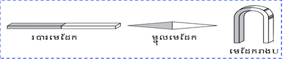
+ មេដែកមានប៉ូលពីរ គឺ ប៉ូលជើង (N) North និង ប៉ូលត្បូង (S) South :
+ ប៉ូលនៃមេដែកមិនផ្លាស់ប្តូរទេ ប៉ូលណាដែលចង្អុលទៅជើង គឺទៅជើងជានិច្ច ។
+ អន្តរកម្មរវាងប៉ូលទាំងពីរនៃមេដែកគឺ ប៉ូលពីរមានឈ្មោះដូចគ្នាច្រានគ្នាចេញ ហើយប៉ូលពីរមានឈ្មោះផ្ទុយគ្នាទាញគ្នាចូល ។
+ អន្តរកម្មរវាងប៉ូលនៃមេដែកហៅថាអន្តរកម្មម៉ាញេទិច ។ អន្តរកម្មនេះបង្កើតបានកម្លាំងហៅថា កម្លាំងម៉ាញេទិច ។
+ មេដែកឆក់តែសារធាតុដែកទេ វាមិនឆក់ទង់ដែង មាស ស័ង្កសីឡើយ ។
+ ដែកថែបអាចបន្ស៊ីធ្វើជាមេដែក ដោយយកវាទៅដាក់ក្នុងដែនម៉ាញេទិច ។ មេដែកនេះហៅថា មេដែកអចិន្ត្រៃយ៍ ។
+ ដែកសុទ្ធក៏អាចបន្ស៊ីជាមេដែកបាន តែវាមិនអាចឆក់រហូតទេ គេហៅថា មេដែកអនាចិន្ត្រៃយ៍ ។
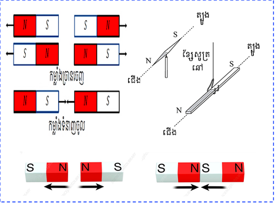
ខ. សញ្ញាណដែនម៉ាញេទិច
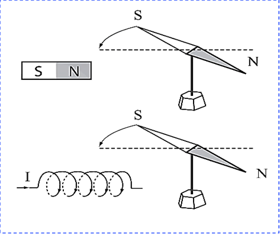
គ. ខ្សែដែនម៉ាញេទិច
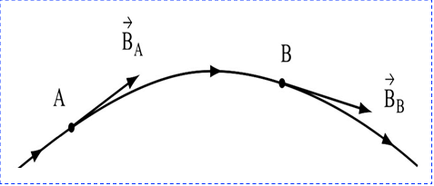
ខ្សែដែនម៉ាញេទិច ជាខ្សែដែលប៉ះនឹងវ៉ិចទ័រអាំងឌុចស្យុងម៉ាញេទិច \( \vec{B} \) នៅគ្រប់ចំណុចនីមួយៗរបស់វា ។ ខ្សែដែនម៉ាញេទិចមានច្រើនរាប់មិនអស់ ។ សំណុំនៃខ្សែដែនម៉ាញេទិច ហៅថា ស្ប៊ិចម៉ាញេទិច ។
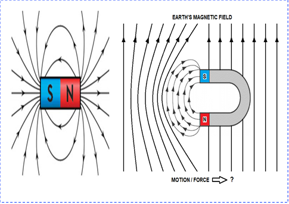
២. ដែនម៉ាញេទិចនៃផែនដី
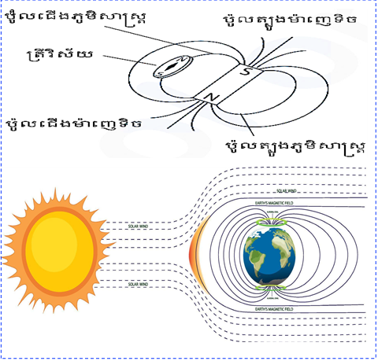
៣. ដែនម៉ាញេទិចនៃចរន្តអគ្គិសនី
ក. ដែនម៉ាញេទិចនៃចរន្តត្រង់
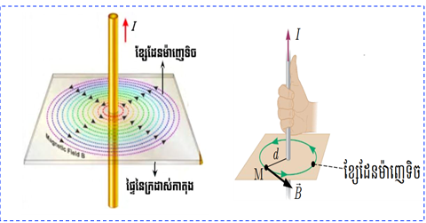
ដែល៖
\( B \)： ជាអាំងឌុចស្យុងម៉ាញេទិច គិតជា (T) (តេស្លា)
\( d \)： ជាចម្ងាយពីខ្សែចម្លងទៅចំណុចសិក្សា គិតជា (m)
\( I \)： ជាអាំងតង់ស៊ីតេចរន្តអគ្គិសនី គិតជា (A)
\( \mu_0 \)： ជាជម្រាបម៉ាញេទិចនៃខ្យល់ ឬសុញ្ញាកាស \( \mu_0 = 4\pi\times 10^{-7} \) T.m/A
ខ. ដែនម៉ាញេទិចនៃចរន្តវង់
+ ករណីវង់មួយស្ពៀ (ក្នុងខ្យល់ ឬសុញ្ញាកាស)
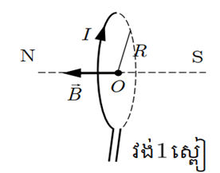
+ នៅក្នុងមជ្ឈដ្ឋានដែលមាន \( \mu_r \)
+ ករណីវង់ \( N \) ស្ពៀ (បូប៊ីនសំប៉ែត)
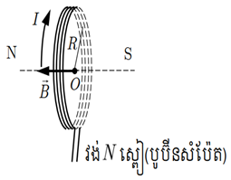
ដែល ៖
\( N \)： ជាចំនួនស្ពៀ ឬ ចំនួនជុំ
\( R \)： ជាកាំរង្វង់នៃស្ពៀ គិតជា (m)
\( I \)： ជាអាំងតង់ស៊ីតេចរន្តអគ្គិសនី គិតជា (A)
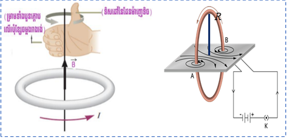
គ. ដែនម៉ាញេទិចនៃសូលេណូអ៊ីត
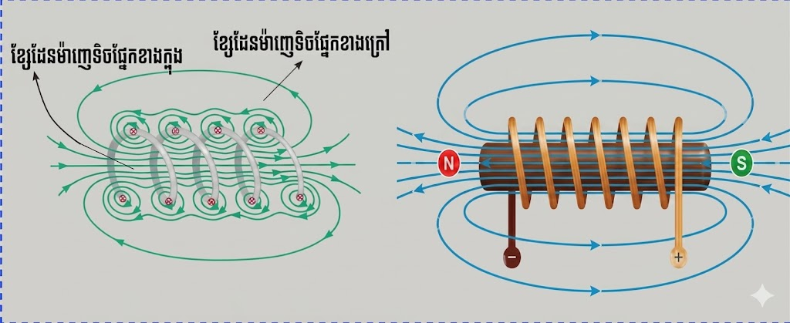
សូលេណូអ៊ីត គឺជាបូប៊ីនវែងដែលមានប្រវែងធំជាង ឬស្មើនឹង ៥ដងនៃកាំរបស់វា (\( l \ge 5R \)) ។ វាធ្វើពីខ្សែចម្លងលាបវ៉ែនី (អ៊ីសូឡង់) រុំលើស៊ីឡាំងវែងមួយឲ្យស្ពៀកៀកជាប់ៗគ្នា ។
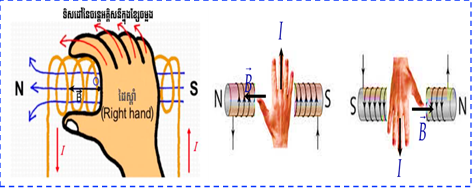
ដែល \( n = \frac{N}{l} \) ជាចំនួនស្ពៀក្នុងមួយម៉ែត្រ ។
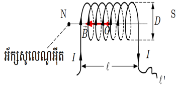
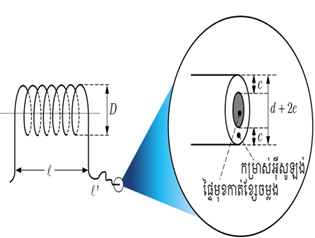
ដែល៖
\( B \)： អាំងឌុចស្យុងម៉ាញេទិច (T)
\( D \)： អង្កត់ផ្ចិតសូលេណូអ៊ីត (m)
\( l' \)： ប្រវែងខ្សែចម្លងសរុប (m)
\( e \)： កម្រាស់អ៊ីសូឡង់ (m)
\( x \)： ចំនួនស្រទាប់
\( d \)： អង្កត់ផ្ចិតខ្សែចម្លង (m)
\( l \)： ប្រវែងសូលេណូអ៊ីត (m)
\( N \)： ចំនួនស្ពៀសរុប
ឃ. បូប៊ីនហ៊ឹមហ៊ុល (Helmholtz)
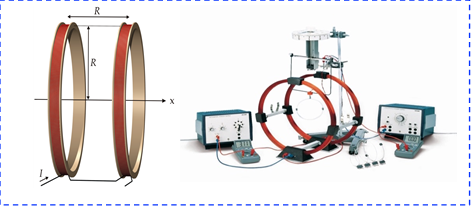
បូប៊ីនហ៊ឹមហ៊ុល ជាបូប៊ីនសំប៉ែតពីរមានអ័ក្សរួមគ្នា មានរាងជារង្វង់ដែលមានកាំ \( R \) ស្ថិតនៅចម្ងាយពីគ្នា \( L = R \) និងឆ្លងកាត់ដោយចរន្តដូចគ្នា ។ នៅចន្លោះបូប៊ីនទាំងពីរមានដែនម៉ាញេទិចឯកសណ្ឋាន ។
+ របៀបគណនាដែនម៉ាញេទិចផ្គួប
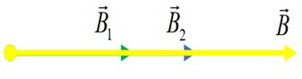
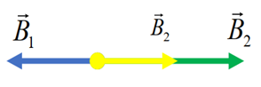
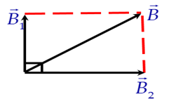
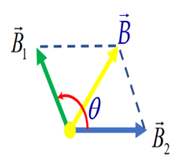
៤. កម្លាំងអេឡិចត្រូម៉ាញេទិច (កម្លាំងឡាប្លាស)
កម្លាំងអេឡិចត្រូម៉ាញេទិច (កម្លាំងឡាប្លាស) ជាកម្លាំងដែលកើតឡើងនៅពេលដែលគេយកខ្សែចម្លងដាក់ក្នុងដែនម៉ាញេទិចរួចឲ្យចរន្តអគ្គិសនីឆ្លងកាត់ខ្សែចម្លងនោះ ។
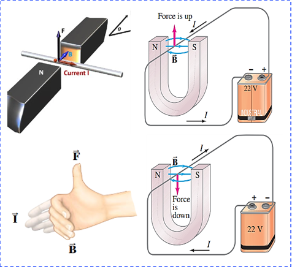
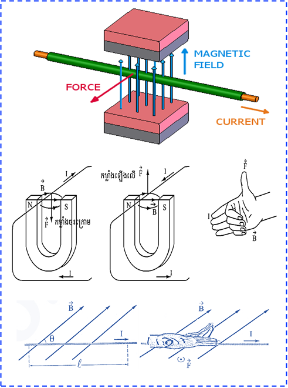
ដែល៖
\( F \)： កម្លាំងឡាប្លាស (N)
\( I \)： អាំងតង់ស៊ីតេចរន្ត (A)
\( l \)： ប្រវែងខ្សែចម្លងក្នុងដែន (m)
\( \theta \)： មុំរវាងខ្សែចម្លង និងដែនម៉ាញេទិច
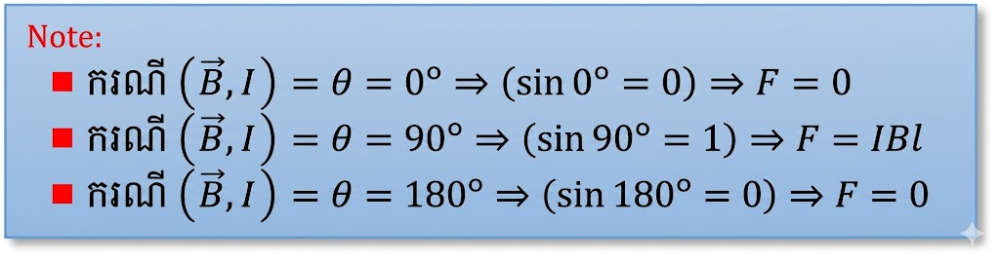
៥. អំពើទៅវិញទៅមករវាងចរន្តត្រង់ពីរ
ក. ពិសោធន៍
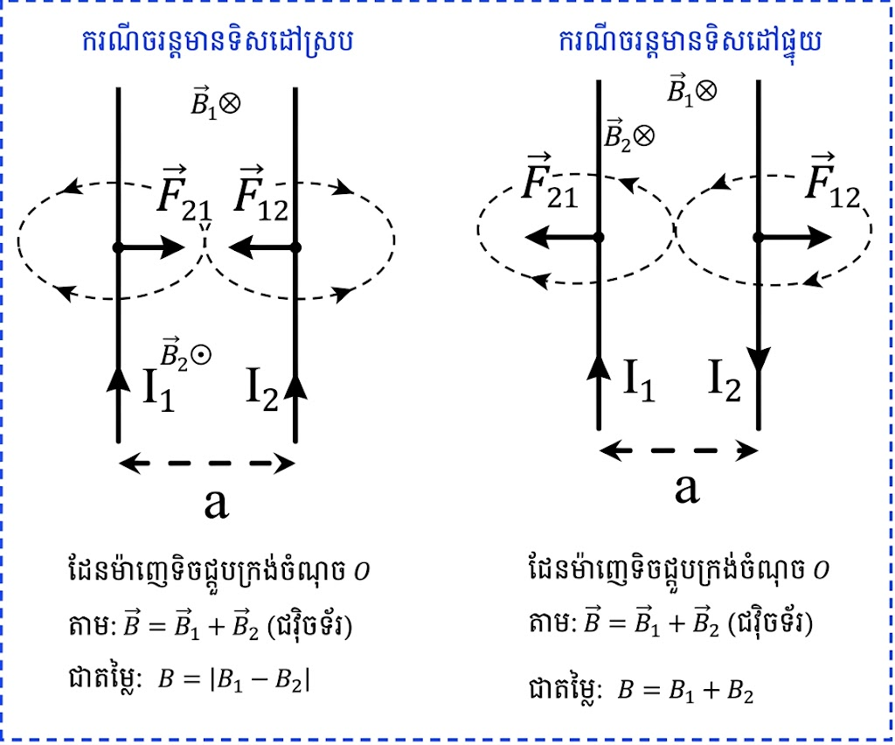
ខ. រូបមន្តកម្លាំងអន្តរកម្ម
ដែល ៖
\( F \)： ជាកម្លាំងអន្តរកម្មរវាងខ្សែចម្លងទាំងពីរ (N)
\( I_1, I_2 \)： ជាអាំងតង់ស៊ីតេចរន្តក្នុងខ្សែនីមួយៗ (A)
\( l \)： ជាប្រវែងខ្សែចម្លងដែលស្របគ្នា (m)
\( d \)： ជាចម្ងាយរវាងខ្សែទាំងពីរ (m)